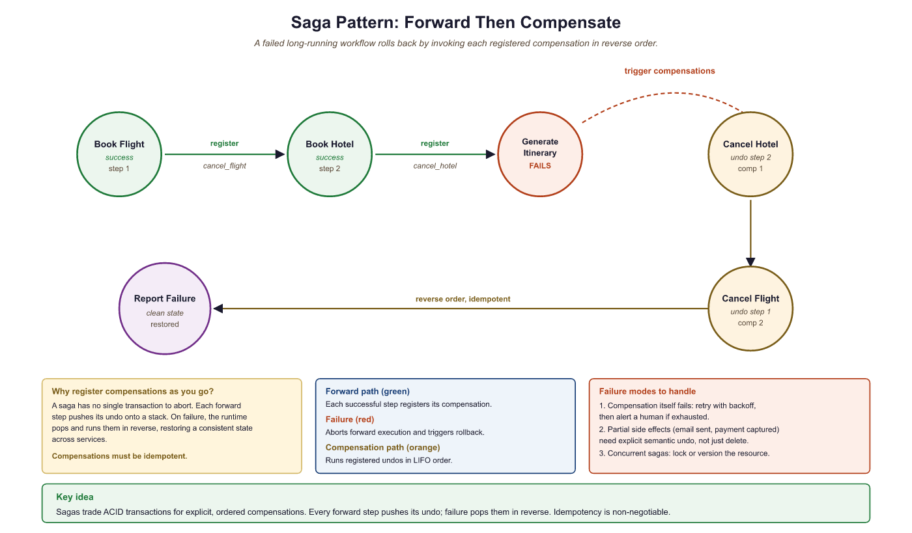
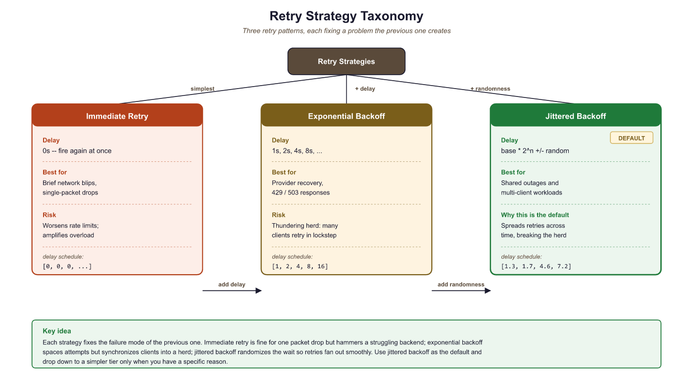

A retry is an opinion about why the last attempt failed. The wrong opinion will cost you twice.
Deploy, Workflow-Watching AI Agent
Installing a durable execution engine is the easy part. Operating one in production means choosing retry policies that respect provider rate limits without amplifying load, ensuring every step takes an idempotency key so retries do not double-charge, registering compensations for side effects so partial failures unwind cleanly, and instrumenting workflows with traces, stall detectors, and cost meters so you can answer "why is this run slow / stuck / expensive?" at 2 a.m. This section covers those four operational patterns. The frameworks from Section 64.2 all support them; you choose the implementation, but the patterns are common.
Prerequisites
This section assumes you have chosen a framework from Section 64.2 (Temporal, Inngest, LangGraph, Restate, or Hatchet). It builds on the observability foundations from Chapter 42 (Evaluation Foundations) and the cost-tracking patterns from Section 63.1.
64.3.1 Retry and Recovery Strategies
Retries are the first line of defense against transient failures, but naive retry logic can cause more harm than good. Retrying too aggressively amplifies load on an already stressed provider. Retrying non-idempotent operations creates duplicate side effects. Retrying indefinitely wastes budget on requests that will never succeed. A production retry strategy must address all three concerns.

64.3.1.1 Retry Taxonomy
Three retry patterns appear in production LLM systems. Immediate retry re-sends the request with no delay; this works for transient network blips but worsens rate-limit situations. Exponential backoff doubles the delay between each attempt (1s, 2s, 4s, 8s), giving the provider time to recover. Jittered backoff adds randomness to the delay (e.g., 1s +/- 0.3s) to prevent the "thundering herd" problem where many clients retry simultaneously after a shared outage. Jittered exponential backoff is the recommended default for LLM API calls.
import random
import asyncio
from typing import TypeVar, Callable, Awaitable
T = TypeVar("T")
async def retry_with_budget(
fn: Callable[..., Awaitable[T]],
*args,
max_attempts: int = 5,
initial_delay: float = 1.0,
backoff_factor: float = 2.0,
jitter: float = 0.3,
max_cost_usd: float = 1.0,
cost_tracker: "CostTracker | None" = None,
**kwargs,
) -> T:
"""Retry with jittered exponential backoff and budget awareness.
Stops retrying if cumulative cost exceeds the budget threshold,
preventing runaway spend on requests that consistently fail
after consuming tokens (e.g., partial streaming responses).
"""
delay = initial_delay
last_exception = None
for attempt in range(1, max_attempts + 1):
# Budget gate: stop if we have already spent too much
if cost_tracker and cost_tracker.total_cost > max_cost_usd:
raise BudgetExceededError(
f"Retry budget exhausted: ${cost_tracker.total_cost:.4f} "
f"exceeds ${max_cost_usd:.2f} limit after {attempt - 1} attempts"
)
try:
return await fn(*args, **kwargs)
except RateLimitError as e:
last_exception = e
# Respect Retry-After header if present
delay = max(delay, get_retry_after(e))
except (TimeoutError, ConnectionError) as e:
last_exception = e
except ContextWindowOverflowError:
# Not transient: retrying the same input will always fail
raise
if attempt < max_attempts:
jittered_delay = delay * (1 + random.uniform(-jitter, jitter))
await asyncio.sleep(jittered_delay)
delay *= backoff_factor
raise MaxRetriesExceededError(
f"Failed after {max_attempts} attempts"
) from last_exceptionRetry-After header from rate-limit responses is respected to avoid hammering a provider that has explicitly requested a cooldown period.Tenacity ships the retry/backoff/jitter machinery as a decorator. Add the cost gate and Retry-After hook in a small before_sleep callback instead of an open-coded loop.
Show code
from tenacity import (retry, stop_after_attempt, wait_exponential_jitter,
retry_if_exception_type)
@retry(
stop=stop_after_attempt(5),
wait=wait_exponential_jitter(initial=1, max=30, jitter=0.3),
retry=retry_if_exception_type((RateLimitError, TimeoutError, ConnectionError)),
reraise=True,
)
async def call_with_retry(fn, *args, **kwargs):
return await fn(*args, **kwargs)tenacity.64.3.1.2 Idempotency in Agent Steps
An operation is idempotent if executing it multiple times produces the same result as executing it once. LLM completions are naturally idempotent (at temperature 0): calling the same model with the same prompt returns the same output and charges the same cost. But many agent actions are not idempotent: sending an email, creating a database record, charging a credit card, or posting to an API. When a durable execution framework retries or replays a step, non-idempotent actions risk duplication.
The standard solution is an idempotency key: a unique identifier attached to each operation. The receiving system checks whether it has already processed a request with that key and returns the cached result if so. For agent workflows, generate the idempotency key from the workflow ID and step number, ensuring that replays produce the same key and are correctly deduplicated.
Idempotency Key Patterns
Every step that produces an external side effect should accept an idempotency key parameter and forward it to the downstream API. The key must be derivable from the workflow's deterministic state (so replay produces the same key), unique across workflow runs (so a re-run of the same workflow does not collide with the previous one), and stable across retries within a single run (so the receiver dedups them). The standard recipe is f"{workflow_id}:{step_name}:{attempt_count_if_relevant}"; many frameworks also expose a built-in key, such as Temporal's workflow.info().workflow_id and activity name.
@activity.defn
async def charge_card(customer_id: str, amount_cents: int, idempotency_key: str) -> str:
"""Charge a card; Stripe dedups by idempotency key for 24 hours."""
resp = await stripe.PaymentIntent.create_async(
amount=amount_cents, currency="usd", customer=customer_id,
idempotency_key=idempotency_key, # Stripe-specific param
)
return resp.id
@workflow.defn
class CheckoutWorkflow:
@workflow.run
async def run(self, order: Order) -> str:
wf_id = workflow.info().workflow_id
# Idempotency key is deterministic from workflow + step name
key = f"{wf_id}:charge_card"
charge_id = await workflow.execute_activity(
charge_card, args=[order.customer_id, order.amount_cents, key],
start_to_close_timeout=timedelta(seconds=30),
retry_policy=RetryPolicy(maximum_attempts=3),
)
return charge_idworkflow.info().workflow_id (Temporal), ctx.run_id (Inngest), the LangGraph thread_id, the Restate object key, or Hatchet's workflow run ID.
64.3.1.3 Compensation Logic for Side Effects
When a multi-step workflow fails partway through, some steps may have already produced side effects that need to be undone. If an agent books a flight in step 3 but fails to book a hotel in step 5, the flight booking may need to be cancelled. This pattern is called compensation (or the "saga pattern" in distributed systems). Each step that produces a side effect registers a compensation function. If the workflow fails, the framework executes compensations in reverse order, cleaning up partial work.
from datetime import timedelta
@workflow.defn
class BookingWorkflow:
"""Saga pattern: each step registers a compensation action."""
@workflow.run
async def run(self, request: TravelRequest) -> BookingResult:
compensations: list[tuple[str, dict]] = []
try:
# Step 1: Book flight
flight = await workflow.execute_activity(
book_flight, request.flight_details,
start_to_close_timeout=timedelta(seconds=60),
)
compensations.append(("cancel_flight", {"id": flight.id}))
# Step 2: Book hotel
hotel = await workflow.execute_activity(
book_hotel, request.hotel_details,
start_to_close_timeout=timedelta(seconds=60),
)
compensations.append(("cancel_hotel", {"id": hotel.id}))
# Step 3: LLM generates itinerary summary
itinerary = await workflow.execute_activity(
generate_itinerary,
args=[flight, hotel, request.preferences],
start_to_close_timeout=timedelta(seconds=120),
)
return BookingResult(
flight=flight, hotel=hotel, itinerary=itinerary
)
except Exception as e:
# Execute compensations in reverse order
for comp_name, comp_args in reversed(compensations):
await workflow.execute_activity(
comp_name, comp_args,
start_to_close_timeout=timedelta(seconds=30),
)
raise WorkflowFailedError(f"Booking failed: {e}") from e
Budget-aware retries require accurate cost tracking, which means your AI gateway must report token usage for failed requests, not just successful ones. Many providers charge for tokens consumed in partial responses (e.g., a streaming response that times out after 500 tokens). If your cost tracker only counts successful completions, the budget gate will underestimate actual spend. Always record token usage from the response headers, including 4xx and 5xx responses that include a usage field.
The phrase "thundering herd" comes from the original BSD Unix mailing list around 1992, describing what happens when a thousand processes wake up at once because the parent process closed a socket. Thirty years later, the same name describes a thousand LLM clients all retrying at second 1.000 after a shared 429 because none of them added jitter. The fix is identical: random offsets so the wakeup cascade is staggered. The Unix kernel learned this in 1995; production LLM stacks are still relearning it one outage at a time.
64.3.2 Observability for Long-Running Workflows
Long-running agent workflows (minutes to hours) require observability patterns beyond what short-lived request/response APIs need. The observability practices from Chapter 42 provide the foundation; this section extends them to durable workflows. Three signals are essential: traces (where time is spent), stall detectors (where time is silently lost), and cost-per-execution (where money is spent).
64.3.2.1 Distributed Tracing
Distributed tracing connects every step in a workflow into a single trace. When a Temporal workflow calls five activities across three workers, or when an Inngest function fans out into parallel steps, the trace ID propagates through all operations. This lets you visualize the entire workflow timeline in tools like Jaeger, Grafana Tempo, or Datadog, identifying bottlenecks (which activity took 45 seconds?) and failure points (which retry finally succeeded?). Temporal provides built-in integration with OpenTelemetry; Inngest and LangGraph offer trace export through their observability APIs.
64.3.2.2 Stalled Workflow Detection
Stalled workflow detection is essential for catching agents that are
stuck rather than failed. A workflow might be waiting for an activity that silently
hangs (the LLM provider accepts the request but never responds). Heartbeat timeouts
address this at the activity level: if an activity does not call heartbeat()
within the configured interval, the framework considers it failed and schedules a retry.
At the workflow level, set a "workflow execution timeout" that caps the total wall-clock
time for the entire workflow, preventing indefinite hangs.
64.3.2.3 Cost-per-Execution Tracking
Cost-per-execution tracking aggregates token usage and provider costs across all steps in a single workflow execution. This metric is critical for understanding the economics of autonomous agents. A research agent might consume $0.12 per execution on average, but outliers (where the agent enters a retry loop or explores an unusually large search space) might cost $5.00 or more. Tracking cost distribution per workflow type, combined with the gateway-level budget enforcement from Section 63.1, enables both real-time cost control and historical cost analysis.
The three operational signals (traces, stall detectors, cost meters) and the three reliability patterns (jittered backoff, idempotency keys, compensations) form an interlocking set. Traces tell you where retries happened; cost meters tell you how much they cost; idempotency keys make the retries safe to repeat. Skip any one and the others lose their value. A workflow without idempotency keys cannot safely retry; one without traces hides which step is responsible for the cost spike a meter just reported; one without stall detectors retries the wrong thing because it never noticed the silent hang. Build all six together or you have a fragile system that only looks durable.
Implement a retry wrapper for LLM API calls that uses jittered exponential backoff. Test it by simulating a provider that returns 429 (rate limit) on the first two attempts and succeeds on the third. Verify that the delays follow the expected backoff pattern and that the total delay stays within bounds.
Answer Sketch
Use the retry_with_budget pattern from Code Fragment 64.3.1b. Create a mock LLM client that raises RateLimitError for the first two calls, then returns a valid response. Assert that the function succeeds on the third attempt, that the delay between attempts roughly doubles (accounting for jitter), and that the total elapsed time is between 2.1s and 4.5s (1s + ~2s with jitter). Also test the budget gate by setting max_cost_usd=0.001 and verifying that retries stop when the budget is exceeded.
Instrument a Temporal workflow with OpenTelemetry to track cost per execution. Export traces and custom metrics (token count, provider cost, retry count) to a Grafana dashboard. Create alerts for executions that exceed 3x the median cost and for workflows that stall for more than 5 minutes without a heartbeat.
Answer Sketch
Use the temporalio.contrib.opentelemetry interceptor to generate spans for each workflow and activity. Add custom span attributes for llm.token_count, llm.cost_usd, and llm.retry_count in each activity. Export to Grafana via the OpenTelemetry Collector. Create a Grafana panel showing cost distribution as a histogram, with a threshold line at 3x median. Use Grafana alerting rules on the temporal_activity_schedule_to_start_latency metric (which indicates task queue backlog) and on missing heartbeats (use a "no data" alert on the heartbeat metric with a 5-minute window).
With the operational patterns in hand, Section 64.4 closes the chapter with framework selection guidance: a decision matrix, migration paths between engines, and the workflow-as-code versus DAG-as-config debate that surfaces every time a team picks between Temporal-style and Airflow-style tooling.